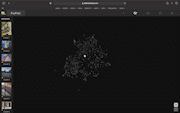

Extended Intelligences
This week we learned about machine learning and artificial intelligence with members of the collective Taller Estampa.
We started with an introduction to artificial intelligence and the way neural networks, datasets, and the training process works.
I had many questions as this was a new, but curiuos, concept for me.
In our assignment, we had to take 100 photos of Poblenou (old and new) and 100 photos that were last taken on our phones. We were assured that our photos will be shown as low resolution.

In the following days, we experimented with multiple Google Colabs including image identification, latent space, and deep fake.
The results were very interesting but the process still remained mysterious, since the notebook was already made step by step for us to press play and execute.
It seemed like there were many unanswerable questions with how the deep neural network makes decisions.

Speculative AI Design
For our speculative design proIt is a tool that generates an original recipe based on a dataset of recipes around the world while using local ingredients.
Takes into account diverse variables: spice, color, health, difficulty...
You can see the presentation here.